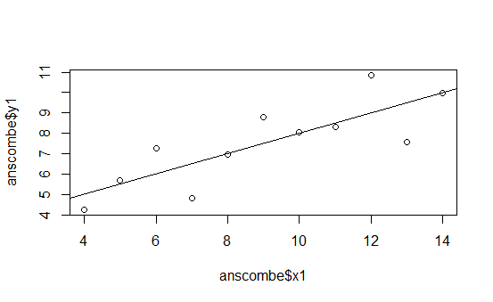
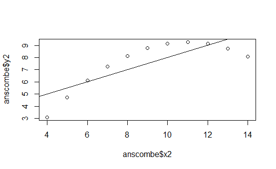
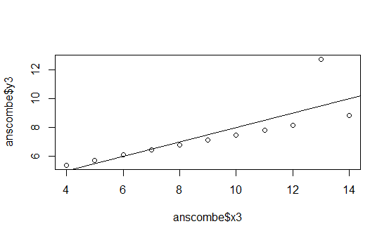
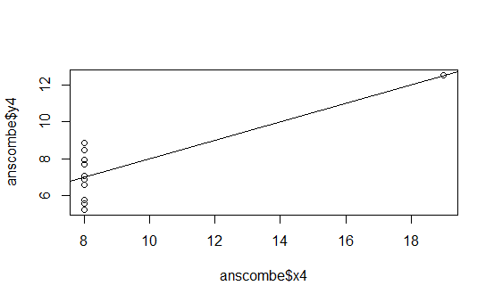
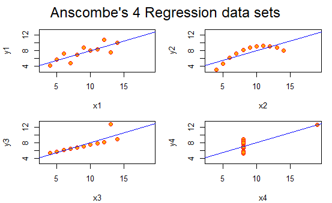
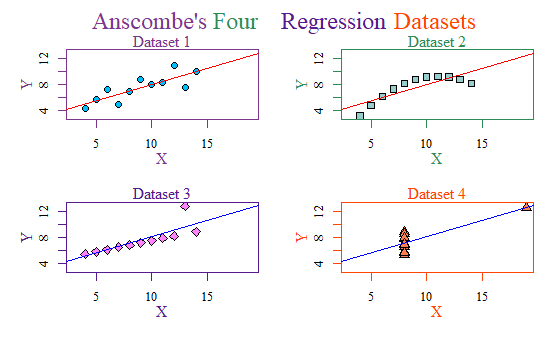
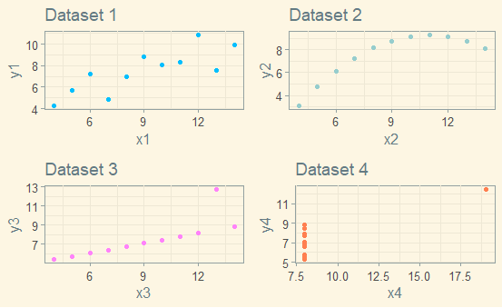

Credit to r-bloggers.com for the thumbnail image. It fit my blog so well I had to borrow it!
Today, I will be looking at the Anscombe’s quartet and using the base R functions to modify the outputs of the plot() function.
To give a brief overview of Anscombe’s quartet, according to Wikipedia:
Anscombe’s quartet comprises four data sets that have nearly identical simple descriptive statistics, yet have very different distributions and appear very different when graphed… They were constructed in 1973 by the statistician Francis Anscombe to demonstrate both the importance of graphing data when analyzing it, and the effect of outliers and other influential observations on statistical properties.
All four datasets have the same means of X and Y, sample variances of X and Y, correlation between X and Y, regression output, and \(R^2\).
The code I used to produce the first set of graphs came from here, as part of my assignment.
Now I have said enough, let’s get to graphing!
The following graphs are the standard ones that R produces when using the plot() function on the four different data series:





This is pretty boring.
But thankfully, I can use R to put them all in the same graph and spruce them up and give each dataset a better title! This is what I came up with:

It may seem cheesy, but I am even proud I managed to figure out how to make a multicolored title like that. Hooray!
But I can do even better. Instead of using the base-r, we can use ggplot2!
This is my final plot using theme_solarized:

I really like how it turned out! The code is below.
# Anscombe (1973) Quartlet
library(tidyverse)
library(gridExtra)
library(ggthemes)
data(anscombe) # Load Anscombe's data
View(anscombe) # View the data
summary(anscombe)
## Simple version
plot(anscombe$x1,anscombe$y1)
summary(anscombe)
# Create four model objects
lm1 <- lm(y1 ~ x1, data=anscombe)
summary(lm1)
lm2 <- lm(y2 ~ x2, data=anscombe)
summary(lm2)
lm3 <- lm(y3 ~ x3, data=anscombe)
summary(lm3)
lm4 <- lm(y4 ~ x4, data=anscombe)
summary(lm4)
plot(anscombe$x1,anscombe$y1)
abline(coefficients(lm1))
plot(anscombe$x2,anscombe$y2)
abline(coefficients(lm2))
plot(anscombe$x3,anscombe$y3)
abline(coefficients(lm3))
plot(anscombe$x4,anscombe$y4)
abline(coefficients(lm4))
## Fancy version (per help file)
ff <- y ~ x
# concatenates lm + 1 - 4 and sets them as names for columns 1 - 4
mods <- setNames(as.list(1:4), paste0("lm", 1:4))
# Plot using for loop
for(i in 1:4) { # opens the for loop, i represents 1,2,3, and 4
## lapply pastes y then x followed by 1 - 4
ff[2:3] <- lapply(paste0(c("y","x"), i), as.name)
## or ff[[2]] <- as.name(paste0("y", i))
## ff[[3]] <- as.name(paste0("x", i))
## assigns each regression to mods 1- 4. lmi allows it to be printed
mods[[i]] <- lmi <- lm(ff, data = anscombe)
print(anova(lmi))
}
sapply(mods, coef) # applies a function over a list and returns the result
## but only used x1
lapply(mods, function(fm) coef(summary(fm))) #lapply will use the whole list
# Preparing for the plots
par(mfrow = c(2, 2), mar = 0.1+c(4,4,1,1), oma = c(0.1, 0.1, 2, 0.1),
family = 'serif')
bgcol = c("deepskyblue", "paleturquoise3", "orchid1", "coral")
fgcol = c("mediumorchid4", "seagreen", "purple4", "orangered")
abcol = c("red", "red", "blue", "blue")
# Plot charts using for loop
for(i in 1:4) {
ff[2:3] <- lapply(paste0(c("y","x"), i), as.name)
plot(ff, data = anscombe, pch = i + 20, bg = bgcol[i],
cex = 1.2, fg = fgcol[i],
xlim = c(3, 19), ylim = c(3, 13), xlab = "", ylab = "")
abline(mods[[i]], col = abcol[i])
mtext("X", side = 1, line = 2, col = fgcol[i])
mtext("Y", side = 2, line = 2, col = fgcol[i])
mtext(paste0("Dataset ", i), side = 3, line = 0, col = fgcol[i])
}
ttltxt = c("Anscombe's", "Four", "Regression", "Datasets")
for(i in 1:4) {
mtext(ttltxt[i], outer = TRUE, cex = 1.5, family = "serif", col = fgcol[i],
adj = 0 + i * 0.21)
}
pt1 <- ggplot(anscombe, aes(x=x1, y=y1)) +
geom_point(color = "deepskyblue") + theme_solarized() +
ggtitle("Dataset 1")
pt2 <- ggplot(anscombe, aes(x=x2, y=y2)) +
geom_point(color = "paleturquoise3") + theme_solarized() +
ggtitle("Dataset 2")
pt3 <- ggplot(anscombe, aes(x=x3, y=y3)) + theme_solarized() +
geom_point(color = "orchid1") +
ggtitle("Dataset 3")
pt4 <- ggplot(anscombe, aes(x=x4, y=y4)) + theme_solarized() +
geom_point(color = "coral") +
ggtitle("Dataset 4")
gridExtra::grid.arrange(pt1, pt2, pt3, pt4, ncol = 2)